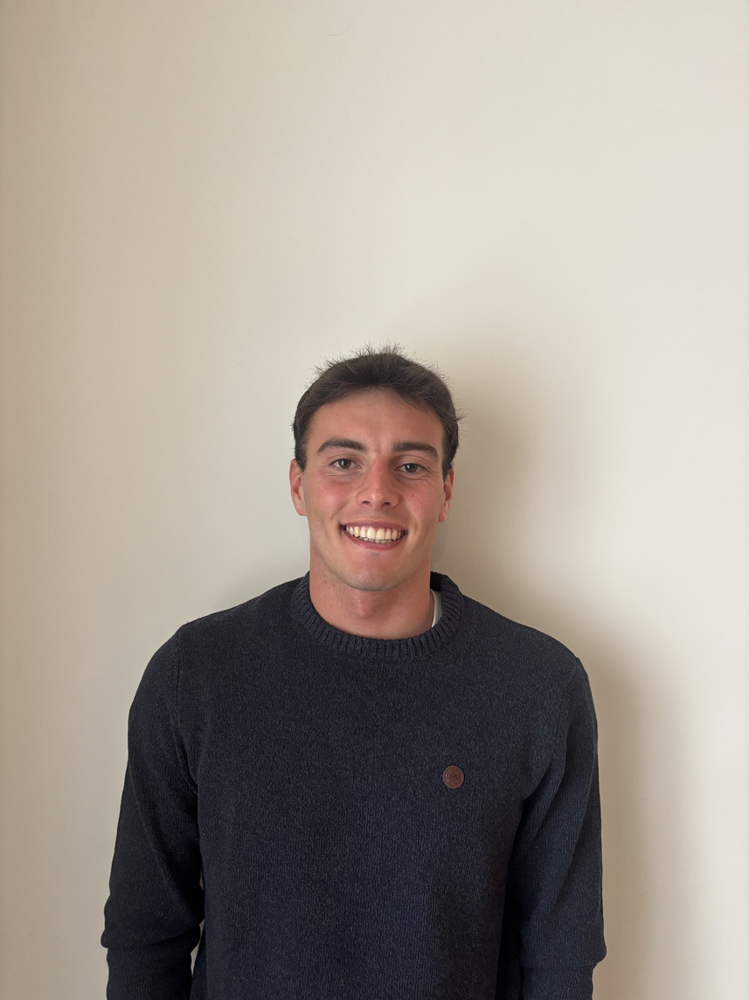

Olist E-Commerce
Organización y depuración de datos de comercio electrónico, análisis con SQL y exploración de resultados en un panel interactivo.
PostgreSQL · SQL · Python · Streamlit · Plotly
INGENIERÍA EN INTELIGENCIA ARTIFICIAL
Estudiante de Ingeniería en Inteligencia Artificial en Tecnun – Universidad de Navarra. Soy una persona curiosa y constante, con ganas de seguir aprendiendo, afrontar nuevos retos y aportar en equipo.

SOBRE MÍ
Me interesan el machine learning, el deep learning y el análisis de datos. Puedo trabajar con datos, desarrollar y evaluar modelos de inteligencia artificial y abordar problemas de visión artificial.
En verano de 2026 realicé prácticas de ingeniería en BieleDigital SL, centradas en la detección de defectos mediante deep learning.
Actualmente formo parte de Talento Deportivo, el programa de la Universidad de Navarra. El deporte me ha enseñado a mantener la constancia, también cuando los resultados necesitan tiempo.
Python · C++ · MATLAB · R · SQL · TensorFlow / Keras · scikit-learn · Spark · Hadoop · Docker
PORTFOLIO
Organización y depuración de datos de comercio electrónico, análisis con SQL y exploración de resultados en un panel interactivo.
PostgreSQL · SQL · Python · Streamlit · Plotly
Clasificación de imágenes con redes convolucionales, comparando modelos de deep learning, transfer learning y combinación de modelos.
Python · TensorFlow / Keras · Optuna
Reconocimiento de patrones en señales ruidosas para identificar etiquetas RFID sin chip mediante machine learning y deep learning.
Python · TensorFlow / Keras · scikit-learn
Procesamiento distribuido de correos ciudadanos sintéticos con Spark y Hadoop. Con este proyecto participé en el concurso Donostia Open Minds.
Apache Spark · Hadoop · Docker · PySpark
ENGLISH
I am an Artificial Intelligence Engineering student at Tecnun – University of Navarra, based in Donostia / San Sebastián. I am curious and persistent, eager to keep learning, take on new challenges and contribute as part of a team.
My interests include machine learning, deep learning, computer vision and data analysis. In summer 2026, I completed an engineering internship at BieleDigital SL focused on defect detection using deep learning. I am currently part of the university’s Talento Deportivo programme.
My projects cover e-commerce analytics with SQL and an interactive dashboard (Olist), image classification with convolutional networks, chipless RFID signal classification, and distributed citizen-email analytics (DonostIArrak). I took part in the Donostia Open Minds competition with DonostIArrak.
Explore my bilingual portfolio